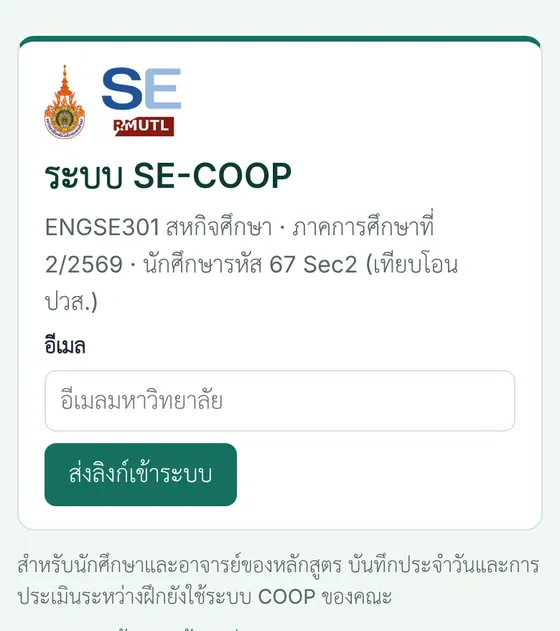
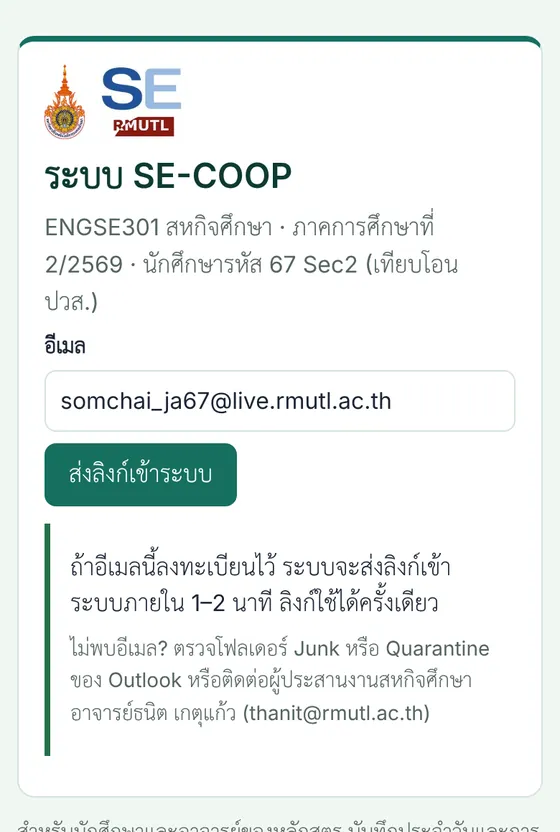
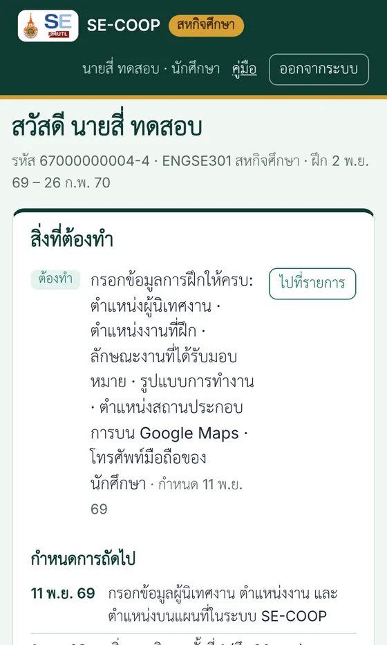
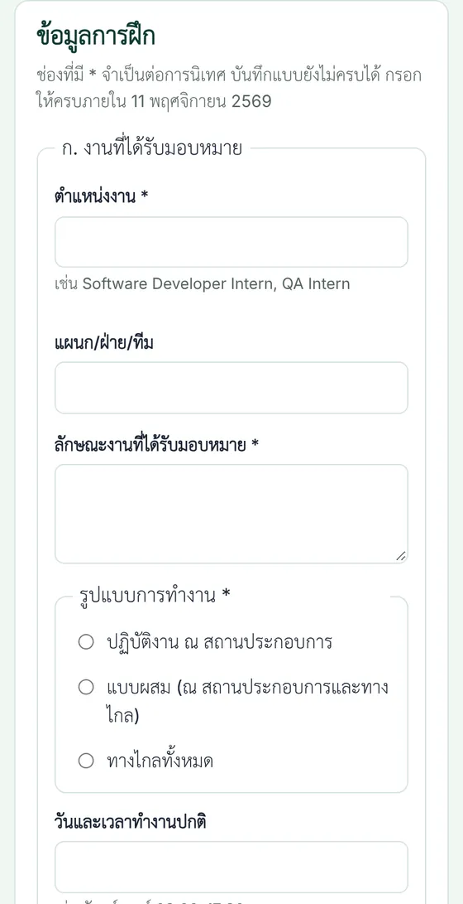
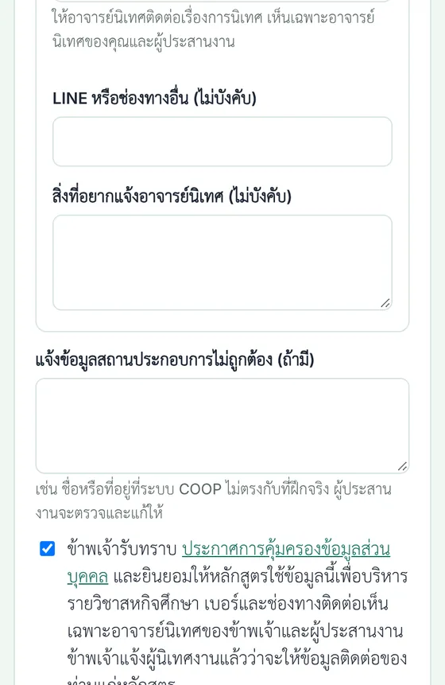
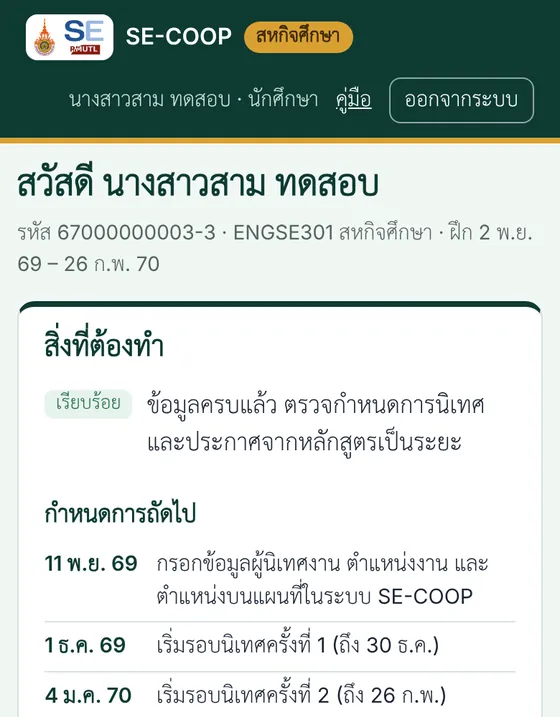

สำหรับนักศึกษา
คู่มือนักศึกษา: เข้าระบบ SE-COOP กรอกข้อมูลการฝึก และสิ่งที่ต้องทำตั้งแต่ตอนนี้จนจบการฝึก ส่วนบันทึกรายวันยังทำในระบบ COOP ของคณะ

ทำตอนนี้ ภายในพุธที่ 11 พฤศจิกายน 2569
เข้าระบบ SE-COOP ด้วยอีเมล @live.rmutl.ac.th กรอกข้อมูลการฝึก 8 ช่องที่มีเครื่องหมาย * ติ๊กยินยอม แล้วกด "บันทึก" ใช้เวลาประมาณ 15 นาที คณะต้องใช้ข้อมูลนี้วางแผนการนิเทศและออกคำสั่งอาจารย์นิเทศ
เตรียมให้พร้อมก่อนเข้าระบบ
- อีเมลมหาวิทยาลัยของตัวเอง (@live.rmutl.ac.th) ที่เปิดอ่าน Outlook ได้ ระบบส่งลิงก์เข้าระบบไปที่อีเมลนี้ ไม่ใช้รหัสผ่าน
- ชื่อ ตำแหน่ง และอีเมลของผู้นิเทศงาน (พี่เลี้ยง) แจ้งท่านก่อนว่าจะให้ข้อมูลแก่หลักสูตรเพื่อนัดหมายการนิเทศ เบอร์ของท่านไม่บังคับ
- ตำแหน่งงาน และลักษณะงานที่ได้รับมอบหมาย เขียนสั้น ๆ 2–4 บรรทัด เช่น ทีมที่อยู่ ระบบที่ทำ เทคโนโลยีที่ใช้
- ลิงก์ Google Maps ของสถานที่ฝึก และ เบอร์มือถือของตัวเอง ให้อาจารย์นิเทศเดินทางและติดต่อได้
วิธีคัดลอกลิงก์ Google Maps บนมือถือ
- เปิดแอป Google Maps ค้นหาชื่อบริษัท ถ้าไม่พบ ให้กดค้างที่อาคารที่ฝึกจนมีหมุดสีแดง
- แตะชื่อสถานที่ (หรือ "หมุดที่ปักไว้") ที่แถบด้านล่าง แล้วแตะ แชร์
- เลือก คัดลอก แล้ววางในช่อง "ตำแหน่งบน Google Maps" ในระบบ
- หรือพิมพ์พิกัดแทนก็ได้ เช่น 18.7953, 98.9529 (กดค้างบนแผนที่ ตัวเลขพิกัดจะขึ้นที่ช่องค้นหา)
ขั้นตอนในระบบ SE-COOP
ขอลิงก์เข้าระบบ
ภาพที่ 1–2- กดปุ่ม "เข้าระบบ SE-COOP" กรอกอีเมล @live.rmutl.ac.th แล้วกด "ส่งลิงก์เข้าระบบ"
- หน้าจอจะขึ้นว่าส่งแล้ว ใช้อีเมลอื่น (เช่น Gmail) ไม่ได้ เพราะระบบรู้จักเฉพาะอีเมลที่หลักสูตรลงทะเบียนไว้
- ถ้าขึ้นหน้า Google Drive ว่า "Sorry, unable to open the file at this time" ให้กดปุ่มเข้าระบบในหน้านี้อีกครั้ง หรือเปิดในแท็บไม่ระบุตัวตน (ดูคำถามพบบ่อย)
เปิดลิงก์ในอีเมล
ภายใน 30 นาที ใช้ได้ครั้งเดียว- อีเมลหัวเรื่อง "[SE-COOP] ลิงก์เข้าระบบ" ส่งจากระบบ SE-COOP กดปุ่ม "เข้าระบบ SE-COOP"
- ไม่พบภายใน 2 นาที ดูโฟลเดอร์ Junk หรือ Quarantine ของ Outlook
- เปิดลิงก์บนเครื่องที่จะใช้กรอก เครื่องนั้นจะจำการเข้าระบบไว้ 14 วัน
ดู "สิ่งที่ต้องทำ" และตรวจข้อมูลบริษัท
ภาพที่ 3- หน้าแรกบอกว่ายังขาดช่องใด กด "ไปที่รายการ" เพื่อไปที่ฟอร์ม
- ชื่อและที่อยู่บริษัทนำเข้าจากระบบ COOP ของคณะ ถ้าไม่ตรงกับที่ฝึกจริง แจ้งในช่อง "แจ้งข้อมูลสถานประกอบการไม่ถูกต้อง" ท้ายฟอร์ม
กรอก 8 ช่องที่มีเครื่องหมาย *
ภาพที่ 4- ก. ตำแหน่งงาน · ลักษณะงานที่ได้รับมอบหมาย · รูปแบบการทำงาน
- ข. ชื่อ-นามสกุล · ตำแหน่ง · อีเมล ของผู้นิเทศงาน
- ค. ตำแหน่งบน Google Maps
- จ. โทรศัพท์มือถือของคุณ
- ส่วน ง. (การเดินทาง ที่จอดรถ วันที่สะดวก) ไม่บังคับ แต่ช่วยอาจารย์วางแผนได้มาก ข้อมูลบริษัทใช้ร่วมกับเพื่อนที่ฝึกที่เดียวกัน คนต่อไปตรวจและแก้ได้
ติ๊กยินยอม แล้วกด "บันทึก"
ภาพที่ 5- ต้องติ๊กช่องรับทราบการคุ้มครองข้อมูลส่วนบุคคลก่อนจึงบันทึกได้
- บันทึกแบบยังไม่ครบได้ กลับมากรอกต่อได้ทุกเมื่อ ถ้ามีช่องผิดรูปแบบ ระบบจะบอกด้วยตัวอักษรสีแดง
ตรวจว่าขึ้น "ข้อมูลครบแล้ว"
ภาพที่ 6- เมื่อครบ ช่อง "สิ่งที่ต้องทำ" จะขึ้นป้ายสีเขียว "เรียบร้อย" เท่านี้ก็เสร็จงานของตอนนี้
- ชื่ออาจารย์นิเทศและวันนิเทศจะแสดงในหน้าเดียวกันเมื่ออาจารย์กรอกแล้ว
ภาพตัวอย่างใช้ข้อมูลสมมติ เลื่อนดูภาพถัดไปได้






สิ่งที่ต้องทำตลอดการฝึก
ตลอดภาค บันทึกการปฏิบัติงานในระบบ COOP ของคณะทุกวันตามเดิม ระบบ SE-COOP ใช้กับงานของหลักสูตร (ข้อมูลการฝึก การนิเทศ งานปลายภาค) ไม่ต้องบันทึกรายวันซ้ำ
เริ่มฝึกและกรอกข้อมูล
2–11 พ.ย. 2569 · สัปดาห์ที่ 1–2- กรอกข้อมูลการฝึกใน SE-COOP ให้ครบภายใน 11 พ.ย.
- เริ่มจดบันทึกสั้น ๆ ทุกสัปดาห์: งานที่ทำ เทคโนโลยีที่ใช้ ปัญหาและวิธีแก้ และเก็บภาพหน้าจอผลงานที่บริษัทอนุญาต ใช้ทำรายงานและโปสเตอร์ปลายภาค
รู้ชื่ออาจารย์นิเทศและวันนิเทศ
12–30 พ.ย. 2569 · สัปดาห์ที่ 2–4- เข้า SE-COOP ดูชื่ออาจารย์นิเทศ วันนิเทศ และรูปแบบ (ณ สถานประกอบการ หรือออนไลน์)
- แจ้งผู้นิเทศงานล่วงหน้า ถ้าบริษัทไม่สะดวกในวันนั้น แจ้งอาจารย์นิเทศทันที
- ถ้าข้อมูลเปลี่ยน เช่น ย้ายทีม เปลี่ยนพี่เลี้ยง ทำงานทางไกล ให้แก้ในระบบ
นิเทศครั้งที่ 1
1–30 ธ.ค. 2569 · สัปดาห์ที่ 5–9- เตรียมเล่า 10–15 นาที: บริษัททำอะไร งานที่ได้รับมอบหมาย เทคโนโลยีที่ใช้ ปัญหาที่พบ สิ่งที่ได้เรียนรู้ และแผนช่วงที่เหลือ
- นัดผู้นิเทศงานให้มีเวลาคุยกับอาจารย์ประมาณ 30 นาที
- นิเทศออนไลน์: เตรียมลิงก์ประชุม ห้องที่เงียบ และเปิดกล้อง
ระหว่างการฝึก
ตลอดภาค- มีปัญหา เช่น ไม่ได้รับมอบหมายงาน งานไม่ตรงสาย ปัญหาสุขภาพหรือความปลอดภัย แจ้งอาจารย์นิเทศหรือผู้ประสานงานทันที ไม่ต้องรอวันนิเทศ
- ถอนหรือเปลี่ยนสถานที่ฝึก ต้องแจ้งทั้งงานสหกิจศึกษาของคณะและผู้ประสานงานของหลักสูตร
นิเทศครั้งที่ 2
4 ม.ค. – 26 ก.พ. 2570 · สัปดาห์ที่ 10–17- เล่าความก้าวหน้าจากครั้งที่ 1 ผลงานที่ทำเสร็จ และสิ่งที่ปรับตามคำแนะนำ
- วันและรูปแบบดูได้ใน SE-COOP เช่นเดียวกับครั้งที่ 1
งานปลายภาค
ก.พ. 2570 · หลักสูตรจะประกาศรูปแบบและวัน- เล่มรายงานสรุปการฝึก สไลด์นำเสนอ และโปสเตอร์ (พิมพ์เป็นโปสเตอร์สแตนด์) ส่งผ่าน SE-COOP
- แบบสะท้อนประสบการณ์ เพื่อเป็นคลังความรู้ให้รุ่นน้องและปรับปรุงหลักสูตร
- ผู้นิเทศงานประเมินตามแบบ สก.วศ.04 ในระบบ COOP ของคณะ
- ห้ามใส่ข้อมูลที่บริษัทไม่อนุญาตให้เปิดเผยในรายงานหรือโปสเตอร์
สิ้นสุดการปฏิบัติงาน
ศุกร์ที่ 26 ก.พ. 2570- ผล S/U มาจากผลประเมินของผู้นิเทศงาน รวมกับคะแนนนำเสนอและรายงาน
ปัญหาที่พบบ่อย
ข้อมูลส่วนบุคคล
เบอร์มือถือและช่องทางติดต่อของคุณ และข้อมูลผู้นิเทศงาน เห็นเฉพาะอาจารย์นิเทศของคุณและผู้ประสานงาน แก้ได้เองทุกเมื่อ เอกสารที่ส่งคณะไม่มีเบอร์หรืออีเมล อ่านประกาศการคุ้มครองข้อมูลส่วนบุคคล